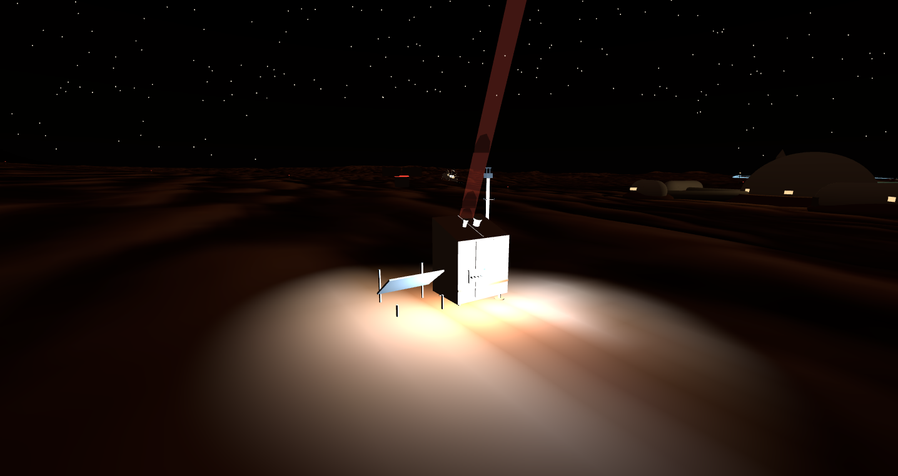

火星科学双站
JEZERO 科学区 · 夜班开工 · 同一条自研 SPAD 工艺线的两种用法

大气激光雷达sci-lidar-01
905 nm 微脉冲 · 光子计数 · 尘埃/冰云垂直廓线
发射905 nm · 3 µJ @ 9.5 kHz · 平均光功率仅 30 mW
📐 几何重叠双轴盲区 <0.29 km · 0.64 km 全重叠 · 15 km 处 O=0.999
📐 链路预算白天 5.1 km（60 s 积分）· 夜间 −40 °C 14∼15 km 吃满量程窗
🔬 探测器自研 NIR SPAD：PDE@905 40.3% · 两轮剂量修整暗计数地板 ↓79×
📐 分辨率100 ns bin = 15 m × 1000 bin = 15 km 量程（FPGA MCS 实时直方图）
工程三块 PCB 已出 Gerber · Vivado 时序收敛 · MEDA 式裸线热电偶测温

光学天文台sci-obs-01
200 mm f/5 RC · SPAD 光子计数焦面 · 夜间开缝巡天
光学200 mm f/5 RC · 大气密度仅地球 0.6%，视宁度接近太空
📐 主动调焦昼夜 ΔT 120 K → CFRP 失焦 306 µm ≫ 焦深 ±35 µm → 副镜 1 µm 步进强制项
🔬 焦面512×512 SPAD @1 kHz 二值帧 · 暗计数 0.383 Hz/px（88 V 全温区免调）
📐 制冷夜间热负荷 127 mW → 173 K 焦面仅需 64 cm² 被动辐射板（天空 150 K）
🔬 高压安全88 V 比 CO₂ 帕邢最小击穿低 4.8× —— 物理上放不了电，免承压舱
📐 读出λ = −ln(1−2·p̄₁)/2T_f 光子率反演 · 读出 ASIC DRC 0 + LVS + 提取后仿